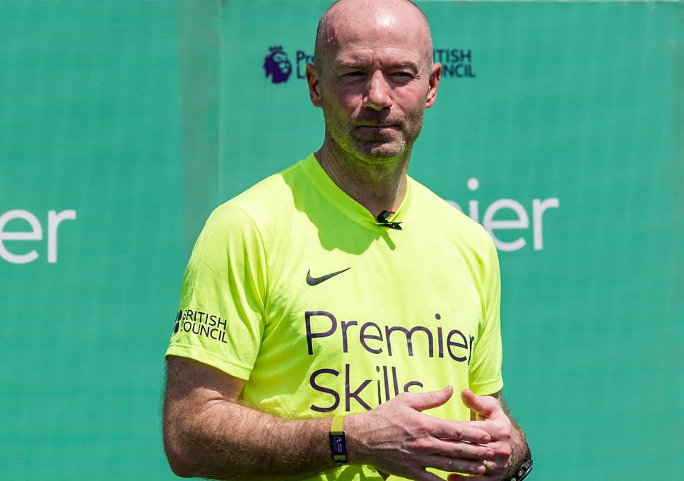

Alan Shearer
Alan Shearer is a retired English footballer who was regarded as one of the world’s best strikers. Recognized for his skills at a tender age of thirteen, Shearer went on to play for various clubs such as Southampton, Blackburn Rovers and Newcastle United in a career spanning two decades. He also represented England in the 1998 FIFA World Cup. Other than just being known as a good player, he is also famous for being purchased by various clubs for huge amounts of money. Alan has scored around 49 of his 206 goals for Newcastle only by headshots, a feat which is rarely achieved by most footballers. He is associated with various charities and even during his days as a footballer, he took time out for charitable causes. He was associated with the organisation NSPCC, which works towards the protection of children from any form of abuse. He also raised money for this organisation through various football matches. Alan has also started his own charity organisation ‘The Alan Shearer Foundation’. In his playing days he was considered to be one of the richest footballers around the globe and still holds this reputation, even after his retirement. He continues be associated with the sport by giving his opinions through post match discussions on national television.
Alan Shearer was born on 13 August 1970 to Anne and Alan Shearer. It was Alan’s father who realised that his son had great potential of being a good footballer, and let his son pursue his dream.
Shearer completed his basic education from Gosforth Central Middle School, and later from Gosforth High School. He very played football throughout this schooling period, and was also the captain of the school team.
Shearer football skills soon got the attention of Jack Hixon, Southampton’s football talent scout. It’s said that it was Hixon who shaped Shearer into the great footballer he eventually went on to become.